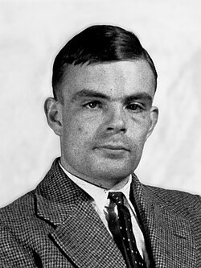

Biografia: Vida y trayectoria científica
Pionero en el desarrollo de la Inteligencia Artificial y la computacion moderna.

Alan Mathison Turing nació el 23 de junio de 1912 en Londres, Inglaterra, en una familia de clase media vinculada al servicio civil británico. Desde sus primeros años manifestó una marcada inclinación hacia las ciencias y las matemáticas. Su interés por comprender los fenómenos naturales y resolver problemas mediante el razonamiento lógico se hizo evidente durante su etapa escolar, en la que comenzó a desarrollar las capacidades que posteriormente caracterizarían su trayectoria científica.
En 1952 fue condenado por homosexualidad en el Reino Unido y obligado a someterse a una castración química mediante tratamientos hormonales.
El 7 de junio de 1954 Alan Turing fallecio. La investigación oficial dictaminó que la causa fue un suicidio, tras encontrar una manzana mordida parcialmente con cianuro junto a su cuerpo.
Sus estudios:
Turing cursó sus estudios secundarios en Sherborne School, donde encontró un sistema educativo que no siempre favorecía sus intereses científicos. A pesar de ello, continuó profundizando de manera independiente en matemática y ciencias naturales. Posteriormente ingresó en el King's College de la Universidad de Cambridge, donde estudió Matemáticas y obtuvo destacados resultados académicos. En Cambridge comenzó a desarrollar investigaciones relacionadas con la lógica matemática y los fundamentos de las matemáticas.
Entre 1936 y 1938, continuó su formación en la Universidad de Princeton, en Estados Unidos, donde trabajó bajo la dirección del matemático Alonzo Church. En 1938 obtuvo su doctorado en Matemáticas. Durante este período profundizó sus investigaciones en lógica matemática y computación, consolidando las bases teóricas de una disciplina que décadas más tarde se convertiría en la informática.
Hechos y aportes:
Turing publicó el trabajo On Computable Numbers, with an Application to the Entscheidungsproblem, una investigación fundamental para el desarrollo de la teoría de la computación. En ella introdujo un modelo matemático abstracto, posteriormente denominado Máquina de Turing, que permitió formalizar el concepto de procedimiento mecánico de cálculo y estudiar los límites de aquello que puede ser resuelto mediante algoritmos.Con el comienzo de la Segunda Guerra Mundial, su actividad científica adquirió una dimensión estratégica. En 1939 se incorporó a Bletchley Park, el centro británico dedicado al análisis y descifrado de las comunicaciones secretas de las potencias del Eje. Allí trabajó junto a otros matemáticos, criptógrafos, lingüistas e ingenieros en el análisis de los sistemas de cifrado utilizados por Alemania. Uno de los principales objetivos era encontrar métodos que permitieran descifrar las comunicaciones protegidas mediante la máquina Enigma.
Dentro de este contexto, Turing realizó importantes contribuciones al desarrollo del criptoanálisis y participó en el diseño de la Bombe, un dispositivo electromecánico destinado a automatizar la búsqueda de configuraciones compatibles con los mensajes cifrados. Este trabajo permitió acelerar considerablemente determinados procesos de análisis y contribuyó al esfuerzo de inteligencia de los Aliados durante la guerra.
Finalizado el conflicto, Turing regresó al ámbito de la investigación científica y se dedicó al desarrollo de las primeras computadoras electrónicas. Trabajó en el National Physical Laboratory, donde participó en el diseño conceptual de la computadora ACE (Automatic Computing Engine), y posteriormente se incorporó a la Universidad de Manchester, donde continuó desarrollando investigaciones relacionadas con la programación y las posibilidades de las computadoras.
Durante este período también comenzó a interesarse por una cuestión que tendría una influencia decisiva en el desarrollo posterior de la inteligencia artificial: la posibilidad de que una máquina pudiera manifestar un comportamiento considerado inteligente. En 1950 publicó Computing Machinery and Intelligence, trabajo en el que presentó el procedimiento posteriormente conocido como Test de Turing. Su propuesta planteaba una nueva manera de abordar el problema de la inteligencia artificial, centrándose en el comportamiento observable de una máquina y en su capacidad para interactuar de manera semejante a un ser humano.
Además de sus investigaciones en computación, Turing realizó importantes aportes a otras áreas científicas. Durante sus últimos años estudió procesos matemáticos relacionado con la morfogénesis, es decir, los mecanismos mediante los cuales pueden generarse patrones y estructuras en organismos biológicos. Estos trabajos demostraron nuevamente la amplitud de sus intereses científicos y su intención de utilizar herramientas matemáticas para estudiar fenómenos de diferentes disciplinas